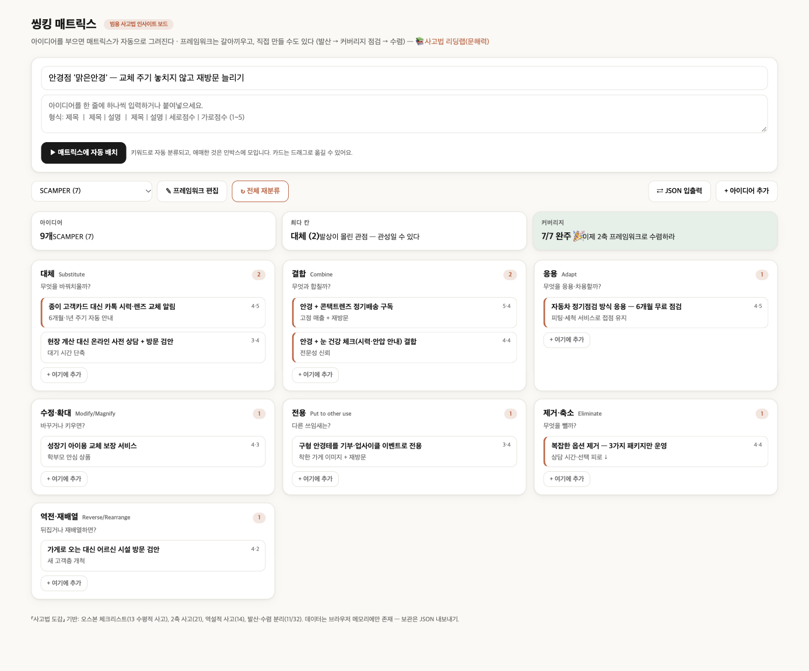

가상 사례 · 💆 뷰티·건강
👓 ‘맑은안경’ 안경점
목표: 교체 주기 놓치지 않고 재방문 늘리기 — SCAMPER 7가지 질문으로 아이디어 9개를 정리했습니다.
핵심 3가지
S 대체 카톡 교체 알림 → 놓치던 재구매 시점을 먼저 연락
A 응용 6개월 무료 점검 → 가게에 올 이유를 만든다
C 결합 안경 + 렌즈 정기배송 → 고정 매출
완성 보드

렌즈별 아이디어
효과·실현성은 1~5점의 예시 점수입니다. ⭐는 둘 다 4점 이상 — “우선 실행” 후보.
대체Substitute2
무엇을 바꿔치울까?
-
종이 고객카드 대신 카톡 시력·렌즈 교체 알림6개월·1년 주기 자동 안내⭐ 효과 4 · 실현 5
-
현장 계산 대신 온라인 사전 상담 + 방문 검안대기 시간 단축효과 3 · 실현 4
결합Combine2
무엇과 합칠까?
-
안경 + 콘택트렌즈 정기배송 구독고정 매출 + 재방문⭐ 효과 5 · 실현 4
-
안경 + 눈 건강 체크(시력·안압 안내) 결합전문성 신뢰⭐ 효과 4 · 실현 4
응용Adapt1
무엇을 응용·차용할까?
-
자동차 정기점검 방식 응용 — 6개월 무료 점검피팅·세척 서비스로 접점 유지⭐ 효과 4 · 실현 5
수정·확대Modify/Magnify1
바꾸거나 키우면?
-
성장기 아이용 교체 보장 서비스학부모 안심 상품효과 4 · 실현 3
전용Put to other use1
다른 쓰임새는?
-
구형 안경테를 기부·업사이클 이벤트로 전용착한 가게 이미지 + 재방문효과 3 · 실현 4
제거·축소Eliminate1
무엇을 뺄까?
-
복잡한 옵션 제거 — 3가지 패키지만 운영상담 시간·선택 피로 ↓⭐ 효과 4 · 실현 4
역전·재배열Reverse/Rearrange1
뒤집거나 재배열하면?
-
가게로 오는 대신 어르신 시설 방문 검안새 고객층 개척효과 4 · 실현 2
먼저 시작하기 좋은 것 (5개)
- 대체 종이 고객카드 대신 카톡 시력·렌즈 교체 알림 — 6개월·1년 주기 자동 안내
- 결합 안경 + 콘택트렌즈 정기배송 구독 — 고정 매출 + 재방문
- 결합 안경 + 눈 건강 체크(시력·안압 안내) 결합 — 전문성 신뢰
- 응용 자동차 정기점검 방식 응용 — 6개월 무료 점검 — 피팅·세척 서비스로 접점 유지
- 제거·축소 복잡한 옵션 제거 — 3가지 패키지만 운영 — 상담 시간·선택 피로 ↓
내 가게로 바꿔서 해보기 3단계 · 약 2분
- 1보드를 복사합니다
- 2씽킹 매트릭스를 엽니다
- 3붙여넣고 불러옵니다
열린 화면에서 ⇄ JSON 입출력 → 붙여넣기(Ctrl/⌘+V) → 불러오기. 그다음 가게 이름과 아이디어를 내 것으로 고치면 끝!
처음이라 낯설다면 3분 체험 안내에서 그림과 함께 따라 해보세요.